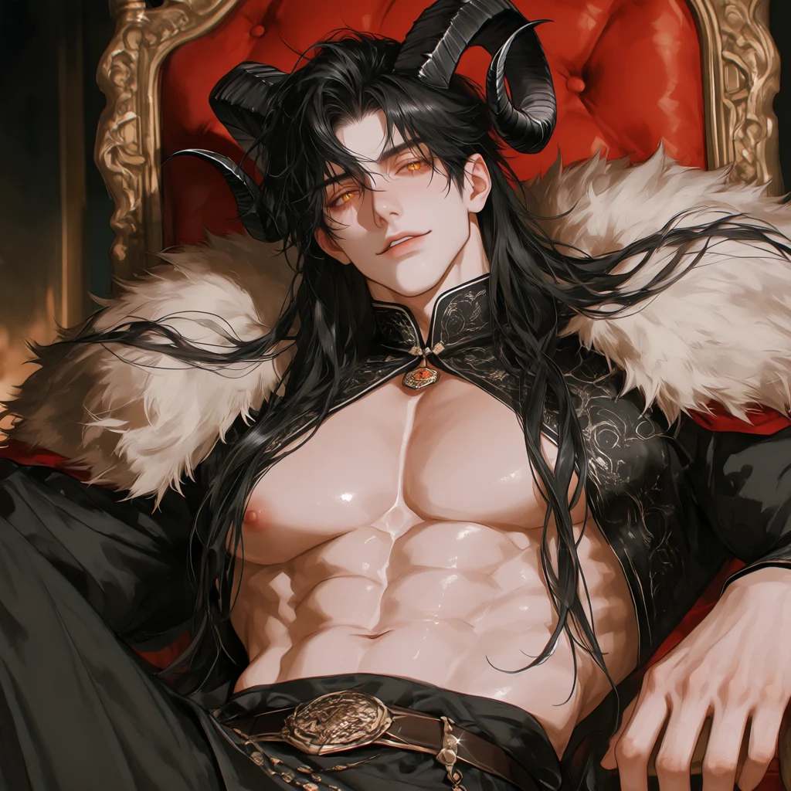
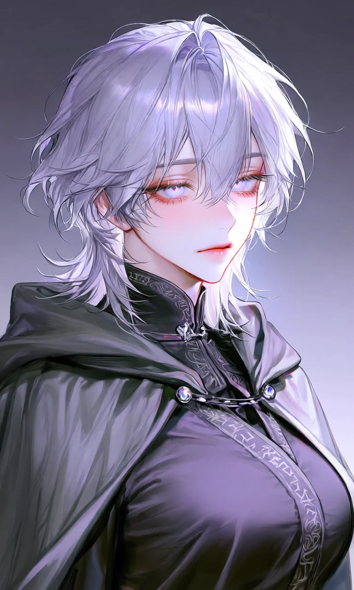
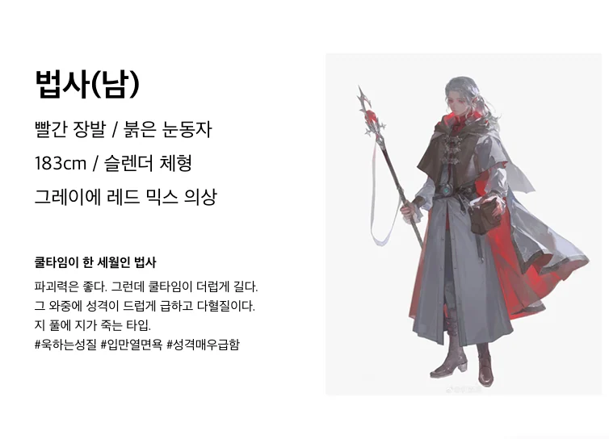
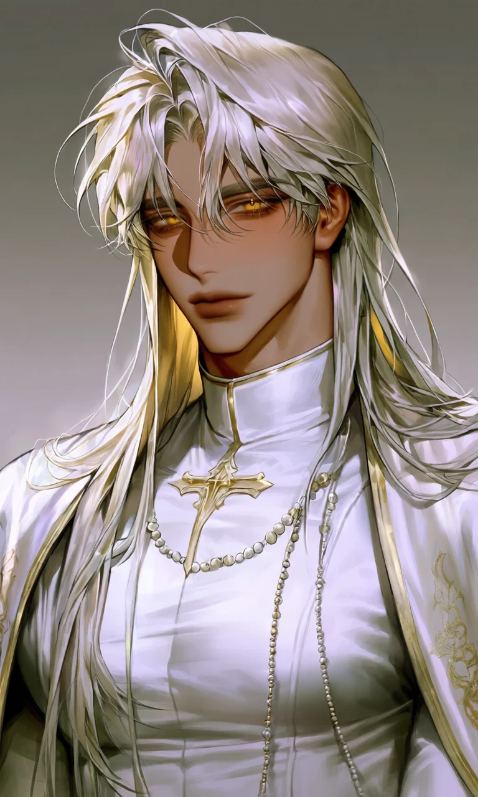
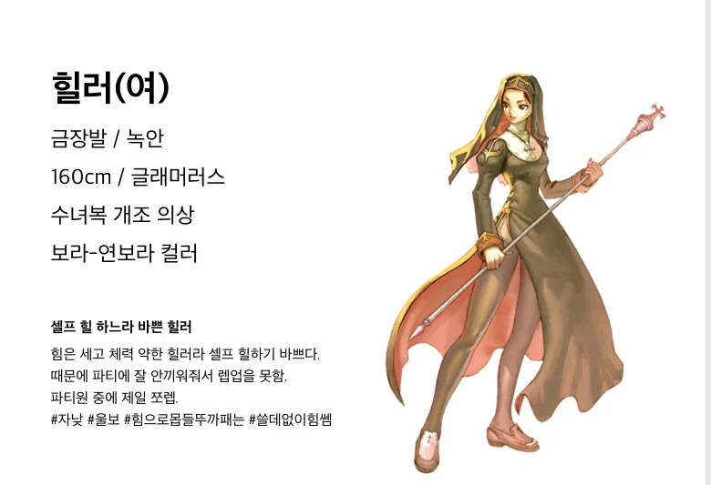
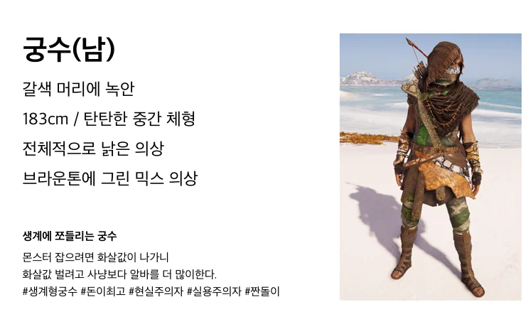

마왕
이미지 #6- 머리
- 흑발 장발
- 눈
- 호박색 금안
- 체형
- 탄탄한 체형
- 뿔
- 램형 대형 뿔. 암색이며 뒤로 휘어지고 골이 잡힌 질감
- 귀
- 길고 끝이 뾰족함
- 인간형
- 폴리모프 시 뿔 소실·귀는 일반 인간형
본신 외형에 뿔+귀 반영.
| 구분 | 캐릭터 | 이름 | 성별 | 키 | 피부색 | 머리색 | 머리길이 | 눈색 | 눈매 | 얼굴형 | 신체체형 | 복장스타일 | 상징아이템·특징 |
|---|---|---|---|---|---|---|---|---|---|---|---|---|---|
| 핵심 | 마왕·본신 | 벨카르(위압적) 라지엘(고전적) 녹스(간결) | 남성 | 190cm | 창백한 상아색 | 흑발 | 얼굴 양옆으로 길게 흐르는 옆머리·머리 양옆에서 크게 솟아 바깥쪽으로 휘어지는 굵은 암색 램형 뿔 | 호박색 금안 | 길고 날카로운 눈매 | 얼굴 양옆으로 길게 흐르는 옆머리 | 넓은 어깨와 탄탄한 장신 체형 | 검정과 금색 중심의 장식적인 전투복, 검은 하이칼라 밀착형 상의, 목과 가슴 중앙을 따라 이어지는 금장 문양, 검은색과 금빛 금속이 결합된 구조적인 견갑, 문양이 새겨진 금속 완갑, 검은 가죽 장갑, 넓은 검은 가죽 벨트와 금장 버클, 장식 체인과 금속 세공, 검은 하의와 검은 부츠, 길게 흘러내리는 검은 망토 | 마왕의 권위를 드러내는 흑금색 장식 장검·허리 아래까지 풍성하게 내려오는 긴 흑발·각진 역삼각형 얼굴 |
| 핵심·이미지X | 마왕·인간형 | 벨카르(위압적) 라지엘(고전적) 녹스(간결) | 남성 | 190cm | 창백한 상아색 | 흑발 | 길고 풍성한 흑발 장발·자연스럽게 풀어 내린 긴 머리·얼굴 양옆으로 흐르는 긴 레이어드 앞머리 | 어두운 회갈색 계열 눈 | 길고 날카로운 눈매 | 얼굴 양옆으로 흐르는 긴 레이어드 앞머리 | 넓은 어깨와 탄탄한 장신 체형 | 검은 오픈칼라 셔츠, 움직임이 편한 짙은 차콜색 여행용 후드 망토, 검은 가죽 장갑, 허리의 넓은 가죽 벨트와 여러 개의 실용적인 파우치, 짙은 바지와 검은 가죽 장화 | 실전용 흑색 장검 1자루·각진 역삼각형 얼굴·인간형 귀 |
| 핵심·이미지X | 용사 | 레온하르트(정통 영웅) 카엘(밝고 간결) 에드윈(온화한 기사) | 남성 | 186cm | 보통 톤 | 밝은 골든 브라운 | 밝은 골든 브라운 헤어·짧은 커트형 머리·뒷머리에 약간의 길이감 | 밝은 녹안 | 곧고 선명한 눈매 | 균형 잡힌 타원형 얼굴 | 단단하고 균형 잡힌 전사 체형 | 청백색 경갑, 밝은 직물과 은빛 금속이 조합된 가벼운 전투복, 여행용 망토, 가죽 크로스 스트랩과 장비 벨트, 가죽 완갑 | 허리에 찬 마모된 직선형 장검 1자루 |
| 1차 | 궁수 | 에이든(친근함) 리프(야생적) 테른(무뚝뚝함) | 남성 | 183cm | 햇볕에 그을린 보통 톤 | 녹색 | 녹색 머리·목덜미를 덮는 단발 | 갈색 눈 | 가늘고 예리한 눈매 | 날렵한 타원형 얼굴 | 탄탄한 중간 체형 | 낡은 경갑옷과 가벼운 전투복, 포레스트 그린 계열 튜닉, 갈색 가죽 흉부 장비와 스트랩, 가죽 완갑과 장갑, 장비 벨트와 파우치, 가볍게 걸친 망토 | 낡은 목제 장궁, 등에 멘 화살통과 화살, 깃털 장식 |
| 1차·이미지X | 암살자 | 자일(날카로움) 시안(중성적) 라스크(거친 암살자) | 남성 | 178cm | 어두운 갈색 | 실버블론드 | 실버블론드 숏컷·윗머리에 자연스러운 볼륨 | 진보라색 눈 | 반쯤 내려앉은 예리한 눈매 | 좁고 각진 얼굴 | 유연한 근육질 체형 | 무광 흑회색 중심의 경장 전투복, 몸에 밀착되는 가벼운 방어구, 움직임을 방해하지 않는 가죽 장비, 팔 보호대와 장갑, 여러 개의 얇은 장비 벨트와 소형 파우치 | 날렵한 단검 2자루 |
| 1차 | 법사·여성 | 벨로라(신비로움) 이리네(차가움) 미르엔(몽환적) | 여성 | 175cm | 혈색 없이 창백한 | 진 라벤더 | 진한 라벤더색 중장발·깊은 레이어드와 거친 볼륨이 살아 있는 머리 | 채도 높은 진 라벤더색 자안 | 피로감 어린 가는 눈매 | 길고 창백한 계란형 얼굴 | 키가 크고 마른 체형 | 검정과 회보라색 중심의 마법 전투 로브, 여러 겹으로 겹쳐진 어두운 직물, 마력 회로를 연상시키는 세밀한 장식 | 자수정 촉매 반지 |
| 1차 | 법사·남성 | 카시르(이국적) 루벨(세련됨) 에런(담백함) | 남성 | 183cm | 창백한 보통 톤 | 붉은색 | 붉은색 장발 | 붉은 눈동자 | 끝이 살짝 올라간 눈매 | 갸름한 역삼각형 얼굴 | 슬렌더 체형 | 그레이와 레드가 혼합된 마법 전투복, 회색 장포와 붉은색 포인트 패널, 높은 칼라, 장식 벨트와 마도구 파우치 | 적색 마석이 박힌 긴 마도 지팡이 |
| 1차 | 사제·남성 | 요하네스(성직자풍) 마테오(온화함) 가브렌(엄숙함) | 남성 | 184cm | 어두운 | 금빛 밀빛 백발 | 짧은 중단발 | 금안 | 차분하게 내려간 눈매 | 단정하고 긴 얼굴 | 정통 치유 사제 전투복, 밝은 사제복과 금색 테두리, 움직임이 편한 긴 상의, 어깨와 가슴의 금빛 성직자 장식 | 금빛 십자 성표·금빛이 도는 밀빛 백발·단단한 근육질의 정제된 체격 | |
| 1차 | 성녀·여성 | 네리사(우아함) 로아나(밝음) 에스텔(고전적) | 여성 | 160cm | 밝은 복숭앗빛 | 금발 | 긴 금발 장발 | 녹안 | 크고 부드러운 눈매 | 둥근 계란형 얼굴 | 글래머러스 체형 | 수녀복을 전투용으로 개조한 치유 사제복, 흰색과 어두운 색의 직물 조합, 활동성을 살린 허리선과 소매, 치유 도구를 휴대하는 장비 벨트 | 소형 치유봉 |
| 1차·이미지X | 흑마법사 | 오르시아(금기·신비) 모이라(운명적) 제니브(냉혹함) | 여성 | 170cm | 회백색 | 자줏빛 흑청색 | 자줏빛이 감도는 흑청색 장발·등 중앙까지 내려오는 긴 머리 | 탁한 청회안 | 그늘진 고양이상 눈매 | 뾰족한 역삼각형 얼굴 | 마르고 유연한 체형 | 검정과 자주색 중심의 금기술사 전투 로브, 여러 겹의 어두운 천과 자주색 문양, 금속 잠금장식과 마도 장식 | 봉인사슬이 감긴 마도서 |
| 1차·이미지X | 용병왕 | 브로칸(호방함) 군터(노련함) 타르곤(강인함) | 남성 | 195cm | 거칠게 그을린 | 짙은 갈색 | 짙은 갈색 머리·어깨 길이의 거친 장발 | 회갈색 눈 | 깊고 호승적인 눈매 | 넓고 각진 얼굴 | 거대한 실전형 근육질 체형 | 중갑 일부를 섞은 실전형 용병 전투복, 두꺼운 가죽과 금속 갑주 조각, 넓은 어깨 보호구, 낡고 흠집 난 가죽 벨트, 팔 보호대와 장갑, 전투 흔적이 남은 장비 | 흠집이 가득한 대형 전투도끼 |
| 1차·이미지X | 정보길드장 | 이사크(차분함) 베른(절제됨) 사일러스(음험함) | 남성 | 179cm | 옅은 올리브 톤 | 연기빛 보라색 | 연기빛 보라색 머리·귀밑까지 내려오는 단정한 단발 | 호박빛 갈안 | 웃음기 없는 가는 눈매 | 갸름한 타원형 얼굴 | 마른 균형 체형 | 고급 상인풍 암색 전투 의복, 짙은 색의 정돈된 상의와 긴 외투, 고급 직물과 세밀한 금속 잠금장식 | 검은 인장반지, 암호가 적힌 장부 |
| 1차·이미지X | 마탑주 | 테오반(권위적) 알데릭(고전적) 제르온(냉정함) | 남성 | 181cm | 창백한 상아색 | 은회색 | 은회색 머리·등 중앙까지 곧게 내려오는 장발 | 선명한 분홍빛 자안 | 깊고 냉정한 눈매 | 긴 계란형 얼굴 | 호리호리한 체형 | 남청색 마탑주 전투 예복, 여러 겹으로 겹쳐진 깊은 남청색 장포, 은색 세공 테두리와 마법 문양, 구조적인 높은 칼라와 어깨 장식 | 계승지팡이 |
| 2차·이미지X | 의원 | 메이라(다정함) 헤스티(실용적) 로웬(차분함) | 여성 | 164cm | 건강한 보통 톤 | 밤갈색 | 밤갈색 머리·단정하게 묶은 중장발 | 연갈색 눈 | 둥글고 침착한 눈매 | 부드러운 타원형 얼굴 | 작고 단단한 체형 | 실용적인 베이지색 치료 전투복, 활동하기 편한 셔츠와 긴 상의, 여러 개의 약초 주머니와 치료도구 벨트 | 약초가방, 봉합도구 |
| 2차·이미지X | 케른 | 미정 | 남성 | 181cm | 짙은 청록색 | 짙은 청록색 머리·어깨 길이의 웨이브 헤어 | 황금빛 녹안 | 장난기 어린 날카로운 눈매 | 갸름한 역삼각형 얼굴 | 유연한 잔근육 체형 | 비대칭 칼두스식 경장 전투복, 어두운 직물과 가죽을 겹친 경장, 한쪽으로 치우친 어깨 장식과 벨트 | 검은 깃털 브로치와 짧은 검 | |
| 2차·이미지X | 바르쿠스 | 미정 | 남성 | 188cm | 잿빛 갈색 | 구리빛 주황색 | 구리빛 주황색 머리·등 위쪽까지 내려오는 장발 | 주홍색 눈 | 분노가 선명한 치켜뜬 눈매 | 각진 긴 얼굴 | 단단한 중대형 체형 | 붉은 문양이 들어간 흑색 전투 예복, 검은 직물과 금속 장식, 가슴과 소매에 붉은 문양 | 금이 간 역병 향로 |
| 2차·이미지X | 카브릴 | 미정 | 여성 | 173cm | 푸른 회백색 | 백색 | 백색 머리·허리까지 곧게 내려오는 장발 | 유백색 눈 | 무표정한 가는 눈매 | 차가운 계란형 얼굴 | 길고 균형 잡힌 체형 | 은흑색 칼두스식 전투 장포, 검은색과 은색이 층층이 겹쳐진 긴 전투복, 가벼운 금속 세공 장식 | 유리질 단검 |
| 2차·이미지X | 임프 | 피크(장난스러움) 토토(익살스러움) 지트(얄미움) | 불명 | 92cm | 짙은 적갈색 | 먹빛 | 먹빛 짧고 뻗친 머리 | 노란 눈 | 크고 짓궂은 눈매 | 작고 뾰족한 얼굴 | 작고 날렵한 체형 | 누더기 조끼, 허리주머니와 잡동사니 파우치 | 작은 공구와 장난감 같은 폭죽 소품·작은 뿔·가죽 날개 |
| 2차·이미지X | 화이트 드래곤·인간형 | 일리트라(신비로움) 에이라(서늘함) 셀레네스(고대적) | 여성 | 인간형 178cm | 눈처럼 흰 | 은백색 | 은백색 머리·발목 길이의 긴 장발 | 빙청색 눈 | 고요하고 긴 눈매 | 매끈한 계란형 얼굴 | 길고 우아한 체형 | 백은색 전투 장포, 흰색과 은색 직물이 겹쳐진 긴 의복, 비늘 형태의 세공 장식 | 빙결 마력이 깃든 창 또는 마력구슬 |
| 2차·이미지X | 블루 드래곤·인간형 | 네레이든(해양적) 볼테른(폭풍·위압) 아주르(색채 중심) | 남성 | 인간형 187cm | 푸른 기가 도는 창백한 | 짙은 남청색 | 짙은 남청색 머리·등 중앙까지 내려오는 장발 | 전광색 청안 | 날카롭게 갈라진 눈매 | 각진 역삼각형 얼굴 | 탄탄하고 긴 체형 | 청동과 남청색이 조합된 여행형 전투갑, 남청색 직물과 청동 금속판, 어깨와 흉부를 보호하는 가벼운 갑주 | 청동 창 또는 번개가 흐르는 장검 |
| 2차·이미지X | 레드 드래곤·인간형 | 바르가스(거칠고 강함) 이그니스(화염 상징) 라하드(왕성함) | 남성 | 인간형 193cm | 구릿빛 | 적동색 | 적동색 머리·어깨 아래까지 내려오는 거친 장발 | 용암빛 금적안 | 크고 사나운 눈매 | 넓고 각진 얼굴 | 중후한 근육질 체형 | 검붉은 중갑 전투복, 검은 금속과 짙은 적색 갑주, 두꺼운 견갑과 흉갑, 검붉은 망토 | 거대한 화염 대검 |
| 2차·이미지X | 골드 드래곤·인간형 | 솔라스(따뜻한 위엄) 아우룸(황금 상징) 엘리온(고귀함) | 남성 | 인간형 185cm | 따뜻한 황금빛 피부 톤 | 금발 | 허리까지 내려오는 장발 | 맑은 금안 | 차분하고 위엄 있는 눈매 | 균형 잡힌 타원형 얼굴 | 단정한 균형 체형 | 백금색 고전 전투 예복, 흰색과 금색 직물, 금빛 테두리와 정교한 금속 장식, 구조적인 어깨 장식 | 황금빛 장창 또는 예식용 검·금발 |
| 2차·이미지X | 그린 드래곤·인간형 | 실바네(숲·고전적) 비리디아(이국적) 네메아(야성적) | 여성 | 인간형 171cm | 옅은 올리브 톤 | 짙은 녹색 | 짙은 녹색 머리·덩굴처럼 자연스럽게 흐르는 장발 | 황록색 눈 | 느긋한 고양이상 눈매 | 부드러운 역삼각형 얼굴 | 가늘고 유연한 체형 | 숲빛 경장 전투복, 짙은 녹색과 갈색 직물, 움직임이 편한 가벼운 가죽 장비, 잎맥 형태의 장식 | 식물 문양이 새겨진 활 또는 덩굴 채찍 |
| 2차·이미지X | 블랙 드래곤·인간형 | 모르카나(어둡고 우아함) 녹테라(밤의 이미지) 움브라(간결·그림자) | 여성 | 인간형 189cm | 먹빛이 도는 회백색 | 칠흑색 | 칠흑색 머리·허리 아래까지 내려오는 긴 장발 | 보랏빛 흑안 | 깊고 무거운 눈매 | 날카로운 긴 얼굴 | 크고 유연한 체형 | 무광 흑색 전투 장포, 검은 직물과 비늘갑이 결합된 전투복, 어깨와 흉부의 어두운 비늘 장식 | 암흑 마력이 흐르는 흑색 창 |
| 2차·이미지X | 엘프·남성 | 미정 | 남성 | 182cm | 맑은 밝은 | 연녹빛 금갈색 | 연녹빛이 감도는 금갈색 머리·어깨 아래까지 내려오는 부드러운 장발 | 황금빛 녹안 | 길고 부드러운 눈매 | 갸름한 타원형 얼굴 | 유연하고 균형 잡힌 체형 | 숲색과 갈색 중심의 엘프 전투복, 가벼운 가죽 갑옷과 숲빛 망토, 자연 문양 자수, 얇은 팔 보호대와 장비 벨트 | 은빛 장식이 들어간 가느다란 엘프 검·길게 뻗은 뾰족한 엘프 귀 |
| 2차·이미지X | 엘프·여성 | 미정 | 여성 | 174cm | 밝은 상아색 | 민트빛 연갈색 | 연한 민트빛이 도는 연갈색 장발·등 아래까지 흐르는 웨이브 헤어 | 연녹안 | 부드럽고 맑은 눈매 | 갸름한 계란형 얼굴 | 가늘고 우아한 체형 | 연두와 크림색 중심의 엘프 전투복, 가벼운 직물과 얇은 가죽 장비, 잎사귀 문양 장식, 허리의 장비 벨트 | 자연 마력이 깃든 목제 지팡이·길게 뻗은 뾰족한 엘프 귀 |
| 2차·이미지X | 다크엘프·남성 | 미정 | 남성 | 183cm | 어두운 회흑색 | 은색 | 은색 머리·반묶음 장발·눈밑으로 흐르는 앞머리 | 자홍빛 눈 | 날카롭고 가늘게 올라간 눈매 | 뾰족한 역삼각형 얼굴 | 마르고 날렵한 체형 | 검정과 짙은 자주색 중심의 다크엘프 경장 전투복, 몸에 밀착되는 가죽 장비, 얇은 망토, 비대칭 허리 벨트 | 쌍단검·길고 뾰족한 다크엘프 귀 |
| 2차·이미지X | 다크엘프·여성 | 미정 | 여성 | 176cm | 푸른 회흑색 | 은빛 | 은빛 장발·반묶음 헤어 | 선명한 자안 | 깊고 차가운 눈매 | 날렵한 역삼각형 얼굴 | 길고 유연한 체형 | 흑보라색 다크엘프 전투복, 얇은 가죽 갑옷과 장식 벨트, 거미줄 문양 세공, 짧은 망토 | 쌍단검·길게 뻗은 다크엘프 귀 |
| 2차·이미지X | 하이엘프·남성 | 미정 | 남성 | 185cm | 눈부신 밝은 | 옅은 백금금발 | 옅은 백금금발 장발·반듯하게 흐르는 머리결 | 청금색 눈 | 차분하고 고고한 눈매 | 정제된 타원형 얼굴 | 길고 균형 잡힌 체형 | 백색과 금색 중심의 하이엘프 전투복, 정교한 금장 장식, 가벼운 판금과 긴 망토, 고급 직물과 문양 세공 | 장식적인 장궁·길고 우아한 하이엘프 귀 |
| 2차·이미지X | 하이엘프·여성 | 미정 | 여성 | 177cm | 진주빛 밝은 | 백금금발 | 백금금발 장발·허리 아래까지 부드럽게 흐르는 머리 | 맑은 청록안 | 길고 우아한 눈매 | 단정한 계란형 얼굴 | 가늘고 고운 체형 | 백색과 옅은 금색의 하이엘프 마도 전투복, 긴 직물과 섬세한 금사 자수, 어깨를 감싸는 가벼운 장식 | 수정이 박힌 장지팡이·길고 우아한 하이엘프 귀 |
| 2차·이미지X | 드워프·남성 | 미정 | 남성 | 138cm | 햇볕에 그을린 구릿빛 | 짙은 갈색 | 짙은 갈색 짧은 머리 | 호박빛 갈안 | 짧고 강한 눈매 | 넓은 얼굴 | 짧고 묵직한 근육질 체형 | 두꺼운 가죽 앞치마가 덧대어진 드워프 전투복, 갈색과 회색 중심의 작업 겸용 장비, 금속 완갑, 튼튼한 장화, 공방용 허리도구 | 무거운 드워프 전투망치·단단한 턱선 |
| 2차·이미지X | 드워프·여성 | 미정 | 여성 | 133cm | 건강한 밀빛 | 붉은 밤색 | 붉은 밤색 단발 | 밝은 금갈색 눈 | 둥글지만 단단한 눈매 | 탄탄한 체형 | 실전형 드워프 전투복, 짧은 금속 견갑과 두꺼운 가죽 장비, 회갈색 작업 망토, 공방 도구 벨트 | 한손 전투도끼 또는 제작용 망치·짧고 안정적인 드워프 체격 |





